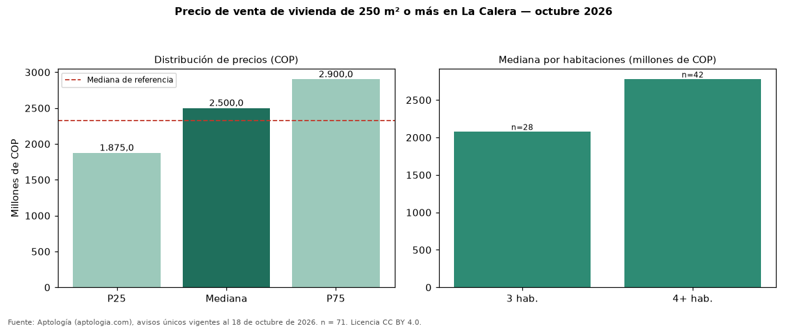

Precio de venta de vivienda de 250 m² o más en La Calera — octubre 2026
COP 2,50 mil millones es la mediana de venta de vivienda de 250 m² o más en La Calera, según 71 avisos únicos. Frente a toda la oferta de venta en La Calera (COP 2,33 mil millones), la diferencia es de 8 % por encima. Por metro cuadrado, la mediana es COP 6.200.318/m² (−2 % frente a COP 6.347.328/m²), puesto 1 de 6 ciudades comparables. Por habitaciones: 3 habitaciones, COP 2,08 mil millones (n = 28); 4 o más habitaciones, COP 2,77 mil millones (n = 42). El 100 % de los avisos tiene al menos un parqueadero. El estrato más frecuente es 6. El rango intercuartílico va de COP 1,88 mil millones a COP 2,90 mil millones (razón 1,5). Datos abiertos CC BY 4.0 de Aptología; fuente y búsqueda de inmuebles: https://www.aptologia.com/venta/la-calera. Archivos: PDF de 2 páginas, CSV con las cifras y gráfica PNG.

| Avisos únicos | 71 |
|---|---|
| Percentil 25 | COP 1.875.000.000 |
| Mediana | COP 2.500.000.000 |
| Percentil 75 | COP 2.900.000.000 |
| Mediana por m² | COP 6.200.317 |
Fuente: avisos vigentes de portales inmobiliarios recopilados por Aptología, deduplicados (mínimo 30 avisos únicos por celda). Precios pedidos, no cerrados. Fecha: 2026-10-18.